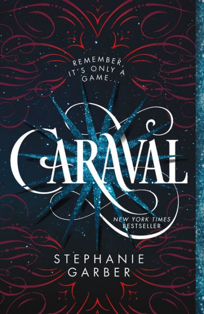
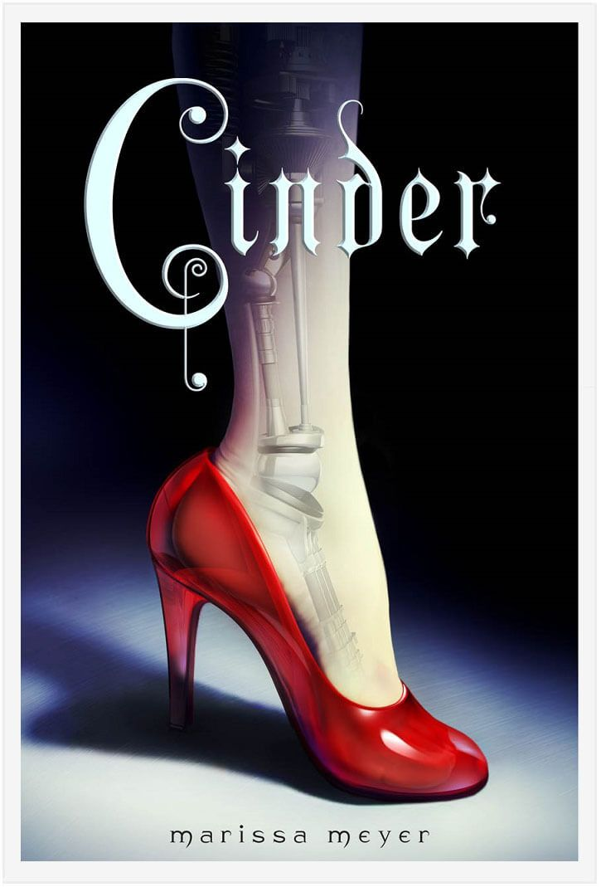

About Me!
Hey there! Welcome to my very AwEsOmE website which currently has a lot of aWeSoMeNeSs, as you can tell.
A bit about me:
I am a sophomore at PDHS! My hobbies include swimming, reading (I'm a huge bookworm), dancing,
and occassionally coding in Python or Java. Some of the extracurriculars I'm in are:
- Rotary Speech
- Varsity Swim
- Battle of the Books
- Robotics
I hope to add National Honors Society to that list as well! Something
interesting about me would be that I've lived in three countries: India, Canada and the U.S.
My most used website: Google
Some of my favorite books (links included):
- One of Us is Lying
- Caraval
- Cinder
- Educated
- Two Can Keep a Secret
- Refugee



Preferred Dishes:
- Chocolate Mug Cake
- This delicious chocolate cake is the best comfort food! I think it's the perfect size
for late night snack and has a wonderful flavor. To customize it, add sprinkles
or chocolate chips on the top! For the recipe, click the button: Click Here
- Okra Curry
- My other favorite is an Indian dish filled with cooked okra and subtly flavored with the aroma
of fennel powder. It's an amazing blend of mouth-watering flavors. For the recipe,
click the button: Click Here
- Spagetti and Meatballs
- Now for a classic dinner dish, in my opinion. It's cooked with a flavorful sauce along with having
a combination of meats. For the recipe, click this button: Click Here
- Strawberry Cheesecake
- Since I have a major sweet tooth, I find this dessert to be just sweet enough for my palette. It's smooth and
creamy, and topped with fresh strawberries + strawberry sauce! For the recipe, click here: Click Here
Hobbies of mine:
- Painting
- Baking & Cooking
- Cakes
- Chocolate Almond Cake
- Chocolate Mug Cake
- Chicken Curry
- Pasta
- Zucchini Fritters
- Reading
- Thrillers
- Sci-fi
- YA Contemporary
- Sports
- Dance
- Cultural (Indian)
- Hip Hop
- Zumba
|
Apples |
Banana |
Grapes |
Orange |
| Year 2013 |
300 |
200 |
150 |
130 |
| Year 2012 |
150 |
130 |
120 |
220 |
| Year 2011 |
100 |
120 |
160 |
200 |
| Year 2010 |
200 |
300 |
200 |
150 |
Written By: ShafaaM09